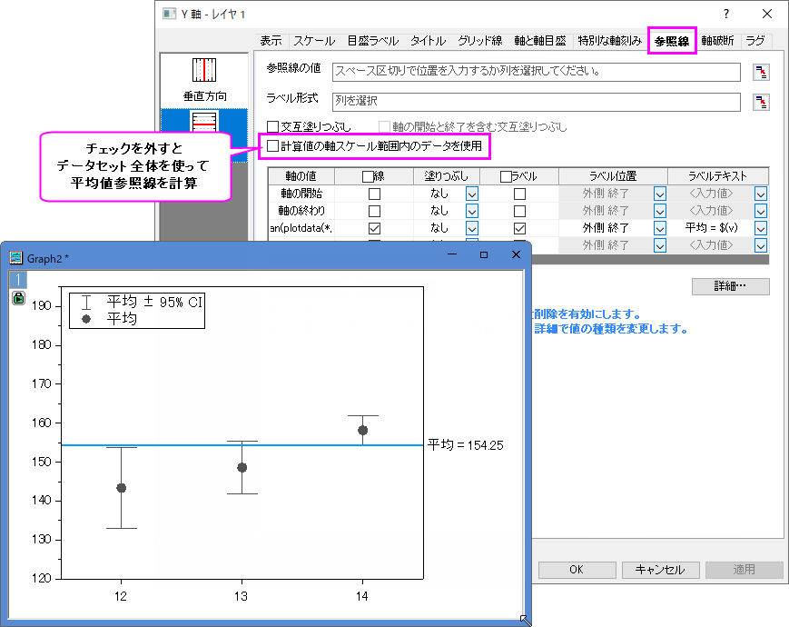

mean-reference-line-wrong
最終更新日：2025/1/22
平均値の参照線を区間プロットまたは多変量管理図に追加すると、参照線の値がデータセット全体の平均値と異なる場合があります。
この問題が発生した場合は、軸ダイアログの参照線タブの計算値の軸スケール範囲内のデータを使用のチェックを外します。
チェックがついている場合、参照線はデータセット全体ではなく軸スケール範囲のデータから計算されます。
